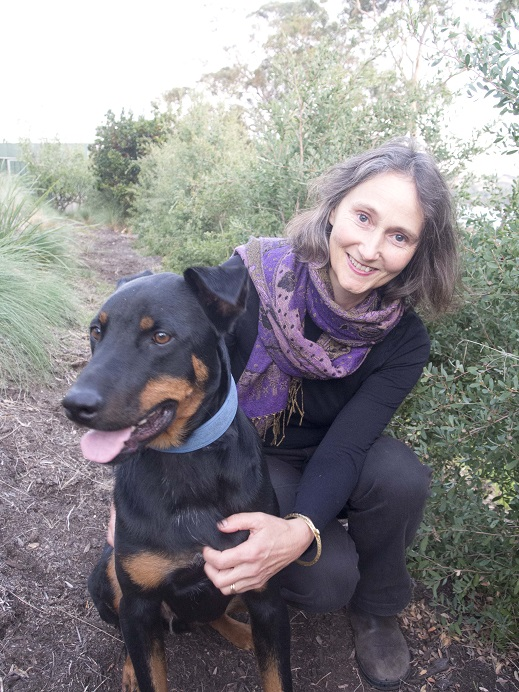

|
|


Adrienne Eberhard
 Photograph: Patrick Eberhard | Published Titles: Agamemnons’ Poppies Jane, Lady Franklin This Woman Chasing Marie Antoinette All Over Paris |
Adrienne Eberhard has published four previous collections of poetry, Agamemnon’s Poppies (2003), awarded second place in the Anne Elder Prize and longlisted in the Victorian Premier’s Prize; Jane, Lady Franklin (2004), adapted for PoeticA, Radio National; This Woman (2011), short-listed for the 2013 Tasmania Book Prize and The Voice of Water (2019), in collaboration with artist, Sue Lovegrove. Her poems are included in anthologies such as Motherlode (Puncher and Wattmann, 2009); Australian Love Poems, (Inkerman & Blunt, 2013), Prayers of a Secular World (Inkerman & Blunt, 2015) Contemporary Australian Poetry (Puncher and Wattmann, 2016) and Best Australian Poems (Black Inc, 2009; 2017). Adrienne was poetry editor of Island (2008 to 2011), has taught poetry at UTAS, and currently teaches enrichment classes at St Michael’s Collegiate. Adrienne lives with her family at Tinderbox, on the D’Entrecasteaux Channel, south of Hobart. | |